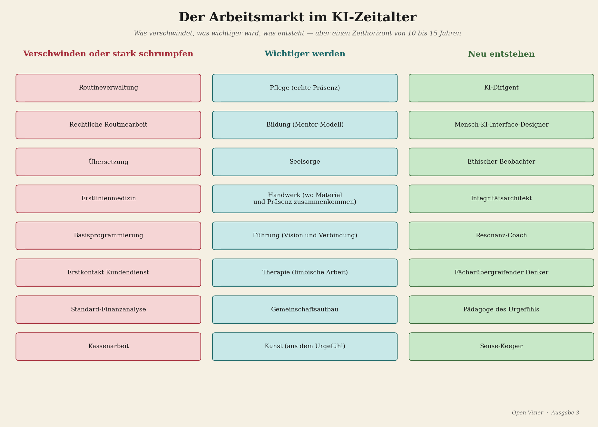
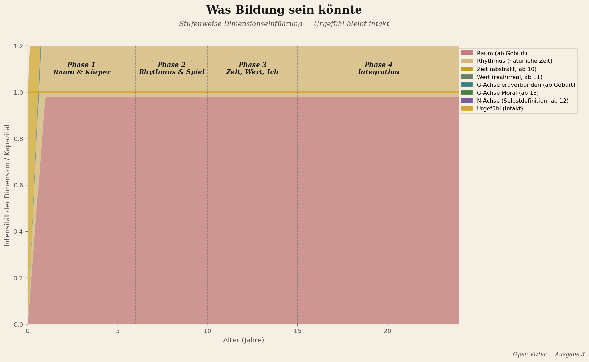
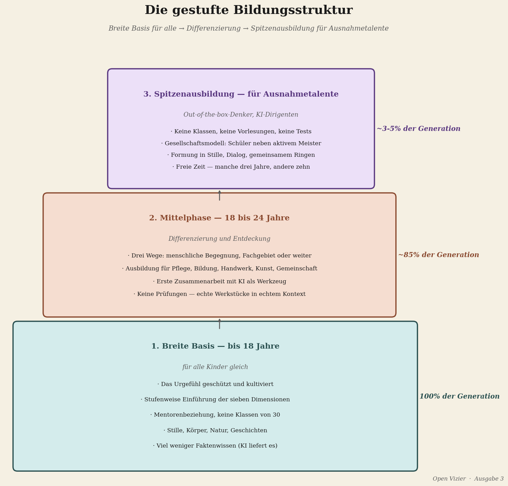
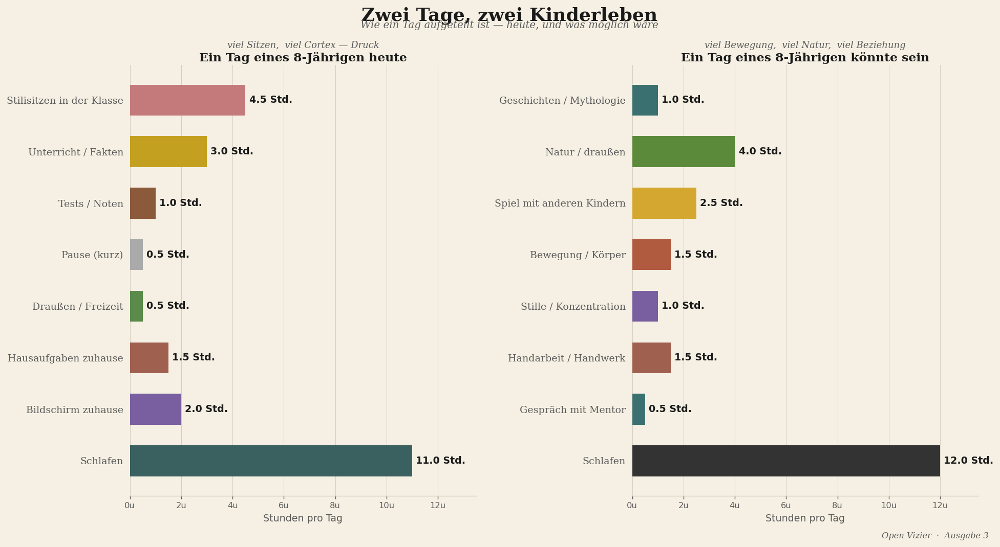
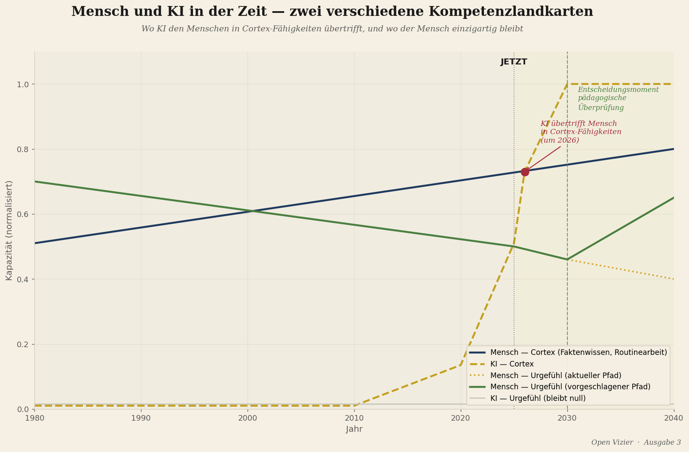
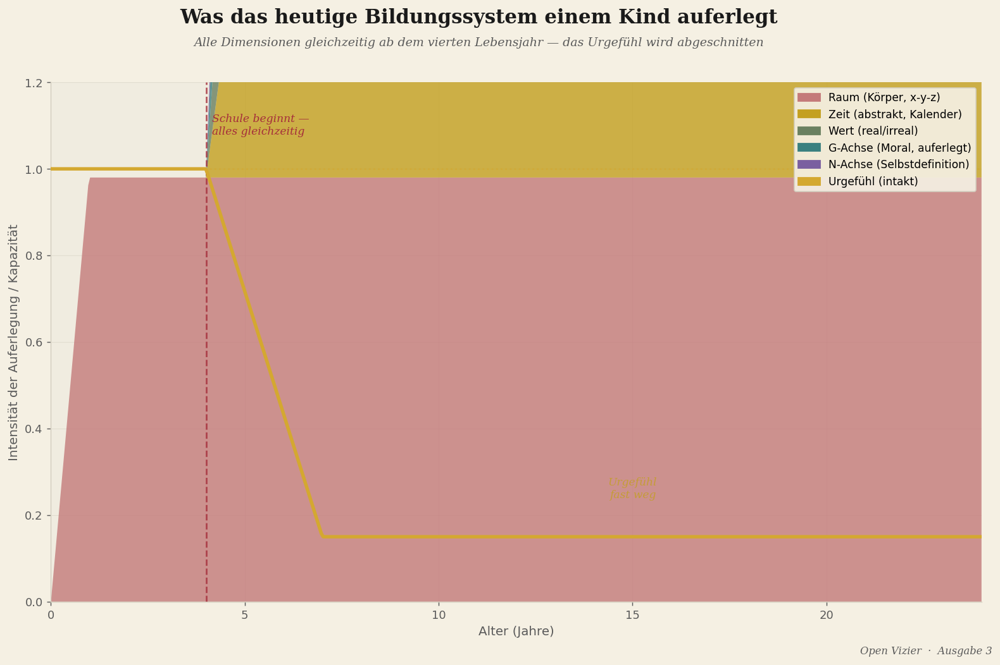

Bildung im KI-Zeitalter
Warum alles, was wir heute lernen, bald nicht mehr zählt
Zukunft · 15 Min. Lesezeit

Von Jacobus van Merksteijn
Es gibt eine Frage, die jedes bildungspolitische Dokument stellt, und die sie alle falsch beantworten. Die Frage lautet: Welche Fähigkeiten braucht der Schüler von heute für den Arbeitsmarkt von morgen?
Die Frage ist falsch formuliert. Sie stellt den Arbeitsmarkt ins Zentrum, und der Arbeitsmarkt von morgen existiert nicht mehr in der Weise, wie diese Frage ihn impliziert. Was innerhalb von zehn bis fünfzehn Jahren im großen Maßstab verschwindet, ist genau die Art von Arbeit, für die die westliche Welt ihre Bevölkerung seit hundertfünfzig Jahren ausbildet: die kognitiven Aufgaben, die routiniert, wiederholbar, sprachlich und quantifizierbar sind. Faktenwissen abrufen. Standardanalysen durchführen. Texte strukturieren. Verfahren befolgen. Mustererkennung in bekannten Domänen.
Das ist die Domäne der künstlichen Intelligenz. Und KI macht es schneller, billiger, fehlerloser, Tag und Nacht, ohne Krankmeldungen, ohne Gewerkschaft, ohne Tarifvertrag.
Die Frage, die das Bildungswesen stellen sollte, ist nicht "Welche Fähigkeiten braucht der Schüler für den Arbeitsmarkt von morgen?" Die Frage ist: Was kann ein Mensch, das eine Maschine niemals kann? Und wie bilden wir Kinder für das aus, was bleibt?
Was KI übernimmt

Ich bin Ingenieur und Erfinder. Ich arbeite in Materialwissenschaft, Energieumwandlung, industrieller Technologie. Ich habe kein romantisches Bild von KI, und ich habe keine Angst vor KI. Ich beschreibe, was ich sehe.
Was KI übernimmt: Wissensspeicherung und -abruf. Ein Sprachmodell kennt mehr Fakten als je ein Mensch wissen wird, und es liefert sie schneller. Standardanalyse bekannter Daten. Diagnostik in bekannten Domänen — medizinisch, juristisch, technisch — auf dem Niveau des besten Spezialisten, aber in Sekunden und für einen Bruchteil der Kosten. Textproduktion für Standardzwecke. Code schreiben für bekannte Probleme. Übersetzung, Transkription, Zusammenfassung, Klassifizierung.
Das sind keine peripheren Fähigkeiten. Das ist der Kern dessen, was viele Fachleute heute ihre Arbeit nennen.
Das ist der Kern dessen, was viele Fachleute heute ihre Arbeit nennen.
Was KI nicht übernimmt: das direkte Lesen einer menschlichen Situation. Das Erspüren, was in einem Gespräch, in einer Beziehung, in einer Organisation wirklich los ist — jenseits von dem, was gesagt wird. Das Verstehen der Welt durch körperliche Erfahrung. Das Verbinden von Menschen auf der tiefsten Ebene. Das Stellen der Fragen, die noch niemand gestellt hat. Das Durchbrechen eines Paradigmas aus einem Gespür heraus, dass das Paradigma nicht stimmt.
Die Kortex-Fähigkeiten verschwinden weitgehend. Die Urgefühl-Fähigkeiten bleiben. Und genau die hat das Bildungswesen systematisch wegtrainiert.
Vier Ausbildungsrichtungen für das, was bleibt

Wenn KI den Kortex weitgehend übernimmt, gibt es vier Richtungen, für die Menschen noch ausgebildet werden müssen.
Die erste Richtung: das Urgefühl als breite menschliche Basis kultivieren. Das ist die Breite — für alle, nicht für eine Elite. Die Fähigkeit, die Wirklichkeit direkt zu lesen. Anwesend zu sein in einer Situation, ohne in den Kortex zu flüchten. Zu fühlen, was mit einem anderen Menschen wirklich los ist, und danach zu handeln. Das ist das, was eine Pflegekraft können muss, wenn die KI das Protokoll bereits ausgearbeitet hat. Was ein Lehrer können muss, wenn die KI den Lernstoff bereits personalisiert hat. Was ein Richter können muss, wenn die KI die Präzedenzfälle bereits geordnet hat. Das menschliche Urteil in der Situation, verankert im direkten Gespür.
Die zweite Richtung: Out-of-the-box-Denken für die Allerbesten. Wirklich neue Probleme zu stellen — nicht neue Varianten bekannter Probleme, sondern wirklich neue Fragen, die außerhalb des bestehenden Paradigmas liegen — das ist die seltenste menschliche Fähigkeit, und sie ist die wertvollste in einem Zeitalter, in dem KI alle bekannten Probleme besser löst als Menschen. Das ist das Terrain des außergewöhnlichen Denkers: der Mensch, der spürt, dass es eine Frage gibt, die niemand noch gestellt hat. Das ist das Terrain von Wegener, der die Kontinente zusammenhängend spürte, bevor er es beweisen konnte. Von Faraday, der den Elektromagnetismus intuitiv verstand, ohne die Mathematik, um ihn zu berechnen. Von Einstein, der auf einem Lichtstrahl zu denken begann, bevor er die spezielle Relativitätstheorie hatte.
Diese Art von Menschen ist nicht durch eine Ausbildung zu erzeugen. Aber sie ist durch ein falsches Bildungssystem zu vernichten. Das aktuelle System vernichtet sie systematisch, indem es das Urgefühl wegtrainiert und den Kortex in den Mittelpunkt stellt. Ein gutes System lässt sie nicht vernichten.
Die dritte Richtung: echte menschliche Verbindung. Was Menschen von Menschen wollen, ist etwas, was eine Maschine niemals liefern kann: die Erfahrung, wirklich gesehen zu werden. Nicht korrekt beurteilt. Nicht effizient geholfen. Wirklich gesehen — auf der Ebene, auf der man existiert, nicht auf der Ebene, auf der man funktioniert. Das ist es, was ein guter Therapeut bietet, und was ein schlechter Therapeut durch Protokoll ersetzt. Was ein guter Lehrer bietet, und was ein schlechter Lehrer durch Informationsvermittlung ersetzt. Was eine gute Führungskraft bietet, und was eine schlechte durch Management ersetzt.
Das Bedürfnis nach echter menschlicher Verbindung verschwindet nicht, wenn KI mehr tut. Es wächst. Denn der Kontrast zwischen effizienter Maschinen-Interaktion und echter menschlicher Anwesenheit wird schärfer. Die Menschen, die echte Verbindung anbieten können, werden wertvoller, nicht weniger.
Die vierte Richtung: das Dirigieren von KI. Maschinen sind da. Sie werden besser. Die Frage ist, wer sie steuert, für welchen Zweck, mit welchem Urteil. Ein Ingenieur, der KI-Systeme für die Materialentwicklung einsetzt, muss verstehen, was die Maschine kann und was nicht, und er muss das Urteil haben, den Unterschied in der konkreten Situation zu kennen. Ein Arzt, der KI-Diagnostik nutzt, muss spüren können, wann die Maschine falsch liegt — nicht durch Analyse, sondern durch das direkte Gespür, dass etwas nicht stimmt. Ein Manager, der ein Team von KI-Tools steuert, muss wissen, was menschliche Entscheidungen sind und was Maschinenentscheidungen sind, und warum dieser Unterschied in bestimmten Situationen entscheidend ist.
Das Dirigieren von KI verlangt alle vier anderen Kompetenzen: Urgefühl, Denken jenseits des Paradigmas, menschliche Verbindung und technisches Wissen über die Maschine. Das ist die anspruchsvollste Kombination. Aber es ist auch das, was das einundzwanzigste Jahrhundert von seinen besten Menschen verlangt.
Die gestufte Ausbildungsstruktur

Wenn die vier Richtungen klar sind, folgt die Struktur.
Bis achtzehn Jahre: eine breite Basis für alle. Keine frühe Selektion, keine frühe Spezialisierung. Das Kultivieren des Urgefühls als Fundament — Artikel 1 bis 6 dieser Ausgabe beschreiben warum und wie. Stille, Körper, Natur, Geschichte, tiefe Konzentration, horizontale Gemeinschaft. Echter Kontakt mit Menschen, Tieren und Jahreszeiten. Die W-Achse, die G-Achse und die N-Achse nicht zu früh, sondern stufenweise eingeführt.
Und neben diesem Fundament: das Grundwissen, das KI nicht ersetzt, weil es gelebt werden muss, nicht nachgeschlagen. Sprechen. Schreiben aus eigenem Gedanken. Rechnen als Denkform, nicht als Rechenmaschine. Handwerk — etwas mit den Händen, mit dem Körper machen, das in der Welt existiert, wenn man damit fertig ist. Geschichte als Erzählung, nicht als Fakten. Ethik als Gespräch über echte Situationen, nicht als abstrakte Regelsammlung.
Von achtzehn bis vierundzwanzig: Differenzierung nach Talent und Richtung. Hier verzweigen sich die Wege. Der Weg zum Out-of-the-box-Denken für jene, die die Fähigkeit haben: Freiheit, Mentoring, tiefe Konzentration auf schwierige ungelöste Fragen, Konfrontation mit den Grenzen des bestehenden Wissens. Nicht ein Master in einem standardisierten Fach, sondern ein Lernweg, der auf das Finden neuer Fragen ausgerichtet ist.
Der Weg zum Out-of-the-box-Denken für jene, die die Fähigkeit haben: Freiheit, Mentoring, tiefe Konzentration auf schwierige ungelöste Fragen, Konfrontation mit den Grenzen des bestehenden Wissens.
Der Weg zur menschlichen Verbindung für jene, die dafür die Anlage haben: Praxis, Supervision, das Lernen des direkten Kontakts lernen. Psychiatrie, Bildung, Führung, Pflege — all das verlangt es, und all das wird jetzt von Protokollen heimgesucht, die die menschliche Verbindung durch standardisierte Verfahren ersetzt haben.
Der Weg zum Dirigieren von KI für jene, die beide Seiten beherrschen: die technische Seite der Maschine und das menschliche Urteil darüber, wann die Maschine zu vertrauen ist.
Für jene, die in einer der Richtungen außergewöhnlich sind: die Spitzenausbildung. Kein Massenunterricht, sondern intensive Begleitung der Besten in ihrer spezifischen Richtung. Ein System, das das nicht bietet, verliert sein Durchbruchpotenzial an einen Durchschnitt, der alle unterrichtet, aber niemandem Exzellenz erlaubt.
Was das von Lehrern und Schulen verlangt

Die oben skizzierte gestufte Struktur klingt auf dem Papier klar. In der Praxis stößt sie auf eine Wand, die alle anderen Wände umfasst: die Auswahl der Menschen, die das Bildungswesen tragen sollen.
Ein Lehrer, der Kindern helfen soll, ihr Urgefühl zu kultivieren, muss selbst ein intaktes Urgefühl haben. Das ist nicht selbstverständlich. Die meisten Lehrer wurden in demselben System ausgebildet, das das Urgefühl wegtrainiert — sie sind das Produkt der Problematik, die sie lösen sollen. Eine Lehrerausbildung, die primär aus didaktischen Techniken, fachlichem Wissen und Prüfungsmethoden besteht, selektiert auf der Ebene, die am wenigsten ausschlaggebend ist für die wirkliche pädagogische Übertragung.
Ein Kind lernt nicht primär von dem, was der Lehrer sagt. Es lernt davon, wer der Lehrer ist — auf der Ebene, die tiefer geht als die professionelle Rolle. Ein Mensch mit intaktem Urgefühl hat eine nährende Anwesenheit, die das Kind empfängt, ohne dass es dafür Worte braucht. Einer dieser Menschen im Leben eines Kindes kann ein Talent retten, das sonst verloren gehen würde. Das ist keine romantische Behauptung. Es ist die strukturelle Logik der direkten Kommunikation zwischen Urgefühlen, die Artikel 4 beschrieb.
Was das konkret verlangt: Lehrer nach Anwesenheit auswählen, nicht nur nach Diplom. Lehrer bei der Wiederherstellung ihres eigenen Urgefühls begleiten, als Teil der Berufsausbildung. Schulen als Gemeinschaften von Menschen einrichten, die die Wirklichkeit direkt lesen, nicht als Produktionsmaschinen, die Wissenseinheiten an Kinder-als-Behälter liefern.
Das klingt groß. Es ist auch groß. Aber das Ausmaß der notwendigen Veränderung ist proportional zum Ausmaß der Krise, die das KI-Zeitalter ankündigt. Kleine Anpassungen reichen nicht. Kosmetische Reform reicht nicht. Was gebraucht wird, ist die Antwort auf die echte Frage: Wozu sind Menschen da, wenn die Maschine die Arbeit macht?
Die Antwort ist nicht, dass Menschen für die Maschine da sind. Die Antwort ist, dass die Maschine für den Menschen da ist — aber nur, wenn der Mensch weiß, was er ist, was er will, was er fühlt und was er erspürt. Dieses Wissen beginnt beim Urgefühl. Das Urgefühl beginnt am ersten Lebenstag. Und es wird geschützt oder zerstört in den Jahren, die folgen.
Die Frage, die wir nicht zu stellen wagen

Hier ist die Frage, an der ich nicht vorbeigehen will.
Wenn KI die Kortex-Fähigkeiten weitgehend übernimmt, und wenn das aktuelle Bildungswesen primär Kortex-Fähigkeiten trainiert, dann bilden wir Kinder gegenwärtig für Arbeit aus, die es in zehn Jahren nicht mehr gibt. Nicht etwas weniger gibt. Nicht mit Anpassungen noch gibt. Einfach: nicht mehr in der Form existiert, für die wir ausbilden.
Das ist eine Aussage mit enormen Konsequenzen. Wenn sie stimmt — und in akademischen Kreisen klingt sie schon weniger kontrovers als vor fünf Jahren — dann ist die dringendste Bildungsfrage der nächsten zehn Jahre nicht, wie wir das aktuelle Bildungswesen digitalisieren, nicht wie wir KI sicher in den Unterricht bringen, nicht wie wir die Prüfungen anpassen. Sie lautet: Wie bauen wir ein vollständig anderes System — und wie schnell?
Sie lautet: Wie bauen wir ein vollständig anderes System — und wie schnell?
Der politische Mut, den das verlangt, ist groß. Das aktuelle System wird von Menschen gesteuert, die im aktuellen System ausgebildet wurden, die das aktuelle System verstehen und ein Interesse am Fortbestehen des aktuellen Systems haben. Fundamentale Reform verlangt, dass diese Menschen sich selbst überwinden.
Das ist nicht leicht. Aber es ist keine freiwillige Option mehr. Der Druck des technologischen Wandels erzwingt die Entscheidung — früher oder später, bewusst oder erzwungen. Die Frage ist, ob wir die Wahl treffen, bevor die Krise sie erzwingt.
Was bleibt

Ich schließe mit dem Wesentlichsten.
Was bleibt, wenn KI alles übernimmt, was der Kortex kann, ist das Urgefühl. Die direkte Verbindung mit der Wirklichkeit, die nicht zu simulieren, nicht zu replizieren, nicht zu digitalisieren ist. Das Lesen einer Situation, bevor die Worte kommen. Das Erspüren eines Menschen, der behauptet, etwas zu sein, aber anders ist als das, was er behauptet. Das Wissen, dass es eine Frage gibt, die niemand noch gestellt hat.
Das ist keine Nischenfähigkeit für eine kreative Elite. Das ist der Kern dessen, was es bedeutet, ein Mensch zu sein in einer Welt voller Maschinen, die menschliche Aufgaben ausführen. Die Maschinen tun die Arbeit. Der Mensch ist für das da, was die Arbeit bedeutet, für wen die Arbeit dient, für die Frage, ob sie der Mühe wert ist.
Eine Zivilisation, die diesen Unterschied aus ihrem Bildungswesen verbannt hat, ist nicht bereit für das Zeitalter, das sie selbst gebaut hat. Sie hat die Maschine gebaut und sich selbst überflüssig erklärt. Das ist ein industrieller Irrtum, aber diesmal zweiter Ordnung: der Irrtum, bei dem wir nicht mehr wussten, was wir waren, und die Maschine als Ersatz programmierten.
Wer seine Kinder für das KI-Zeitalter ausbildet, beginnt bei den ersten drei Lebensjahren, wie Artikel 6 beschrieb. Er endet bei der Frage, wie ein Siebzehnjähriger sein eigenes Urgefühl als Kompass nutzt in einer Welt, die ihn anders haben will. Diese Verbindung — vom ersten Jahr zum siebzehnten, vom ersten "Mama, ich habe Hunger" bis zur ersten Frage, die noch niemand für ihn gestellt hat — das ist der Ausbildungsweg für das einundzwanzigste Jahrhundert.
Es ist auch der schwierigste Ausbildungsweg, der je vorgeschlagen wurde. Und er ist der einzige, der das Zeitalter übersteht.
Wer weiterlesen möchte: Das theoretische Fundament — das Urgefühl, die drei Gehirnschichten, die stufenweise Dimensionseinführung — steht im Werk Denkbasis für ein 7-dimensionales Gefühlsmodell und im Manifest für Bildung und Erziehung, beide als Download auf openvizier.org verfügbar. Ein gesondertes Nachschlagewerk über Bildung im KI-Zeitalter (ai_tijdperk_onderwijs.md) ist in Produktion und wird auf derselben Seite veröffentlicht, sobald es fertig ist.
Ein gesondertes Nachschlagewerk über Bildung im KI-Zeitalter (ai_tijdperk_onderwijs.md) ist in Produktion und wird auf derselben Seite veröffentlicht, sobald es fertig ist.
Wen bilden wir im KI-Zeitalter aus?
Jedes bildungspolitische Dokument stellt dieselbe Frage — und beantwortet sie falsch. "Welche Fähigkeiten braucht der Schüler für den Arbeitsmarkt von morgen?" Die Frage ist falsch formuliert. Der Arbeitsmarkt von morgen existiert nicht mehr so, wie diese Frage ihn impliziert.
"Was kann ein Mensch, das eine Maschine niemals kann? Und wie bilden wir Kinder für das aus, was bleibt?"
Was KI übernimmt — und was nicht
KI übernimmt: Wissensspeicherung und -abruf. Standardanalyse. Diagnostik auf Spezialistenniveau, in Sekunden. Textproduktion, Code, Übersetzung, Klassifizierung. Das ist der Kern dessen, was viele Fachleute heute ihre Arbeit nennen.
KI übernimmt nicht: Das direkte Lesen einer menschlichen Situation. Das Erspüren, was in einem Gespräch wirklich los ist, jenseits von dem, was gesagt wird. Das Stellen der Fragen, die noch niemand gestellt hat. Das Durchbrechen eines Paradigmas aus einem Gespür heraus.
Die Kortex-Fähigkeiten verschwinden weitgehend. Die Urgefühl-Fähigkeiten bleiben. Und genau die hat das Bildungswesen systematisch wegtrainiert.
Vier Ausbildungsrichtungen für das, was bleibt
Und eine vierte Richtung: das Dirigieren von KI. Spüren können, wann die Maschine falsch liegt — nicht durch Analyse, sondern durch das direkte Gespür, dass etwas nicht stimmt.
Die Frage, die wir nicht zu stellen wagen
Wenn KI die Kortex-Fähigkeiten weitgehend übernimmt, und wenn das aktuelle Bildungswesen primär Kortex-Fähigkeiten trainiert, dann bilden wir Kinder gegenwärtig für Arbeit aus, die es in zehn Jahren nicht mehr gibt. Nicht etwas weniger gibt. Einfach: nicht mehr in der Form existiert, für die wir ausbilden.
Die dringendste Bildungsfrage ist dann nicht, wie wir das aktuelle Bildungswesen digitalisieren oder KI sicher einbringen. Sie lautet: Wie bauen wir ein vollständig anderes System — und wie schnell?
Schluss
Was bleibt, wenn KI alles übernimmt, was der Kortex kann, ist das Urgefühl. Die direkte Verbindung mit der Wirklichkeit. Das Lesen einer Situation, bevor die Worte kommen. Das Wissen, dass es eine Frage gibt, die niemand noch gestellt hat.
Eine Zivilisation, die diesen Unterschied aus ihrem Bildungswesen verbannt hat, ist nicht bereit für das Zeitalter, das sie selbst gebaut hat. Sie hat die Maschine gebaut und sich selbst überflüssig erklärt.
"Es ist der schwierigste Ausbildungsweg, der je vorgeschlagen wurde. Und er ist der einzige, der das Zeitalter übersteht." — Jacobus van Merksteijn